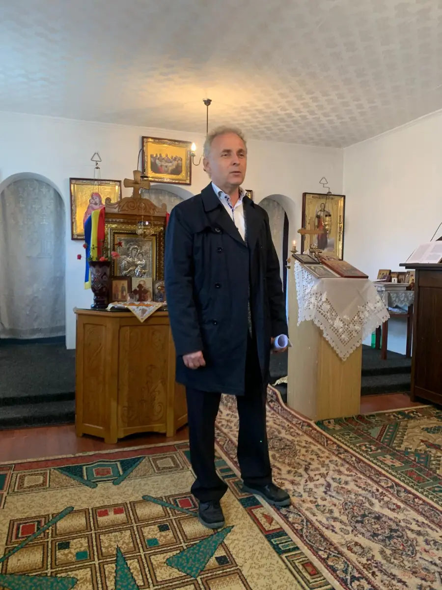
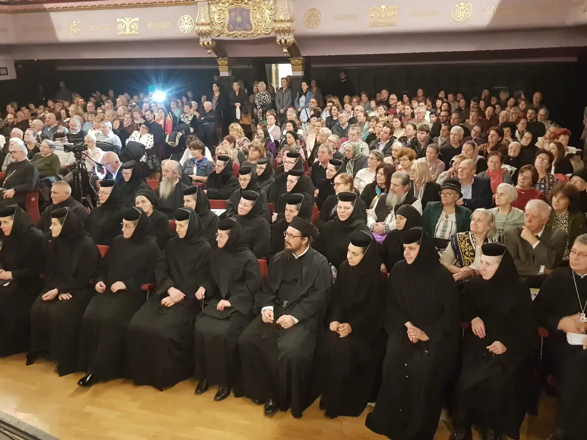
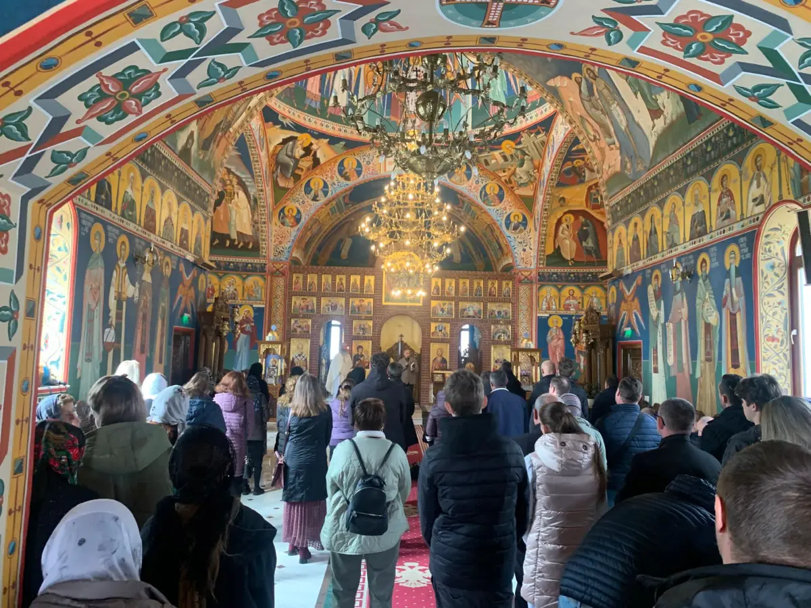
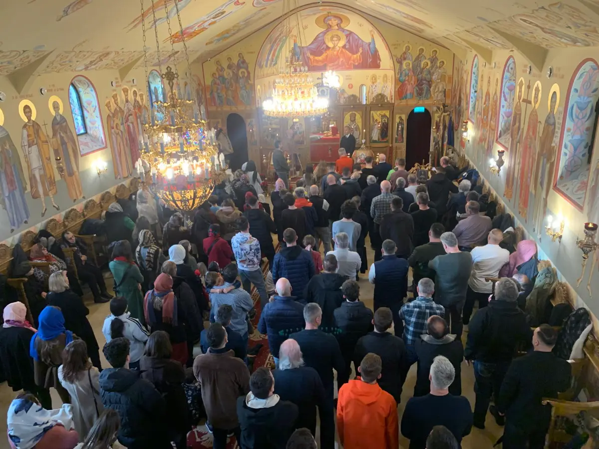
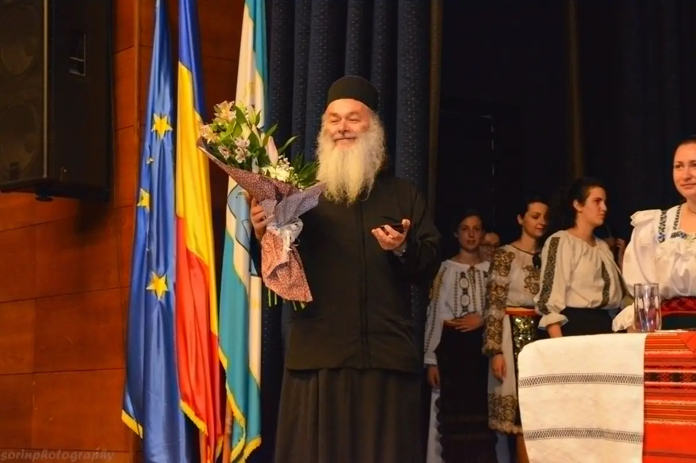

Trepte spre cer
Romanul de debut, în 813 pagini: un intelectual își caută libertatea, fericirea și pe sine în România „socialistă”.
Comandă
Scriitor · Organizator de evenimente culturale
Așterne pe hârtie poeme, eseuri, beletristică și teatru — foc viu din configurații spirituale, făcut cuib între coperte.
Autorul romanului „Trepte spre cer” și al cărții „Dor de Athos”. Organizează lansări de carte, simpozioane și conferințe duhovnicești, în țară și în parohiile românești din diaspora.
Cărțile autorului
Romanul de debut, în 813 pagini: un intelectual își caută libertatea, fericirea și pe sine în România „socialistă”.
Comandă
Pagini despre „Muntele Sufletului”, după peste două decenii de pelerinaje la Sfântul Munte.
Comandă
[Două rânduri despre carte, de la autor.]
ComandăTradusă în engleză, franceză, germană, spaniolă, italiană și maghiară.
ComandăDouă cărți despre Părintele Ioan Iovan de la Recea, apărute la editura Lebăda Neagră.
Despre autor
Născut pe la mijlocul anilor ’60 (care secol, n-are importanță), într-o zodie pe cale de dispariție — a celor care mai cred în educație și cultură —, T.C.M.-ist eșuat pe țărmuri literare, așterne pe hârtie poeme, eseuri, beletristică, teatru și le face cuib între coperte. În rest… mult prea puțin.

Evenimente
Lansări de carte, simpozioane și conferințe duhovnicești, în săli de teatru, la târguri de carte, în mănăstiri și în parohiile românești din Spania și Irlanda.






Dialoguri
„Pagini de poezie în proză de o frumusețe tulburătoare.”
Contact
Pentru lansări de carte, simpozioane, conferințe sau interviuri. Cărțile se comandă direct de la editură.